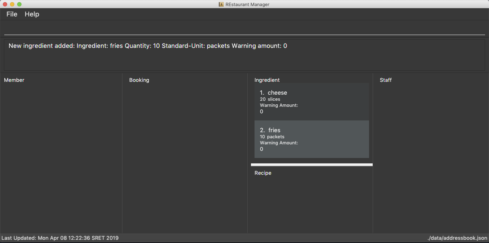
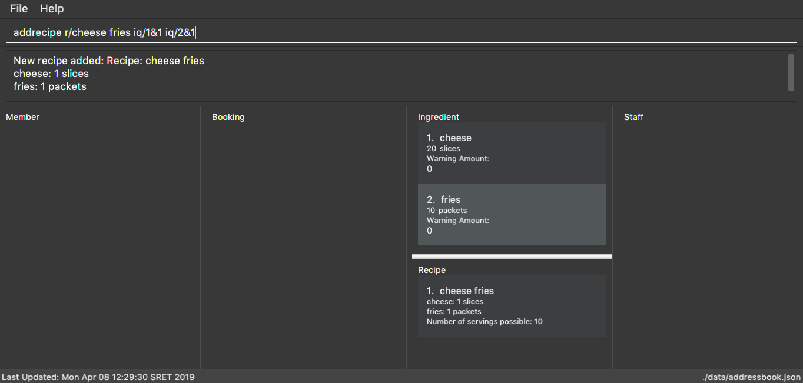
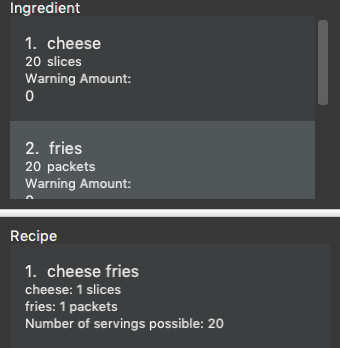

Overview
This portfolio summarises my contributions made throughout the project.
REstaurant Manager (REM) is a desktop application tailored to restaurant owners of small/medium size restaurants. This application provides a single platform for them to manage many areas of the restaurant: customers with membership, staff, bookings, ingredient and recipe inventory.
Summary of contributions
-
Major enhancement: added ingredient and recipe feature
-
What it does: allows the user to add, restock and consume ingredients, keeping track of the quantity of ingredient remaining in the inventory. Ingredients with quantity in inventory falling below the user-inputted warning amount can also be listed. User can also add recipes, keeping track of the ingredients, and its required quantity in each recipe.
-
Justification: This feature improves the product significantly, as the recipe and ingredient features help to keep track of dishes served in the restaurant and inventory status for the ingredients. This can enable the users to make decisions, such as to restock ingredients, or limit number of bookings, to ensure smooth running of restaurant.
-
Highlights: (insert highlights)
-
-
Code contributed: [Code]
-
Other contributions:
-
Project management: (insert contributions)
-
Documentation:
-
Community:
-
Contributions to the User Guide
Given below are sections I contributed to the User Guide. They showcase my ability to write documentation targeting end-users. |
Inventory Management
List Ingredients: listIngredients
List all ingredients in the inventory that has ingredient name containing any of the key words inputted, and has ingredient quantity falling below the ingredient warning amount.
Format: listIngredients [in/INGREDIENT_NAME] [w/]
Example:
-
listIngredients in/tomato
All ingredients with name containing the word 'tomato' will be listed, e.g. 'tomato sauce', 'tomato ketchup' will be listed.
-
listIngredients w/
All ingredients with ingredient quantity falling below ingredient warning amount will be listed.
-
listIngredients in/tomato w/
All ingredients with name containing the word 'tomato', and having ingredient quantity that falls below ingredient warning amount will be listed.
Add Ingredient: addIngredient
Adds new ingredient into inventory. Previously not existing in inventory before.
Format: addIngredient in/INGREDIENT_NAME u/INGREDIENT_UNIT [q/INGREDIENT_QUANTITY] [w/INGREDIENT_WARNING_AMOUNT]
Example:
-
addIngredient in/chicken wings u/packets
Adds new ingredient, chicken wings (with default ingredient quantity as 0), counted in terms of packets, into inventory.
-
addIngredient in/chicken wings q/10 u/packets
Adds 10 packets of chicken wings into inventory.
-
addIngredient in/chicken wings q/10 u/packets w/2
Adds 10 packets of chicken wing into inventory and when quantity in inventory falls below 2 packets, listIngredients w/ will display chicken.
Delete Ingredient: deleteIngredient
Deletes the specified ingredient from the restaurant book. Note that this action also deletes all recipes that contain this ingredient.
Format: deleteIngredient INDEX
Example:
-
listIngredients(returns chicken as 3rd index)deleteIngredient 3
Delete chicken from inventory
Restock Ingredient: restockIngredient
Restock an ingredient in inventory, by a particular amount, based on specified INDEX via listIngredients.
Previously existing in inventory before.
Format: restockIngredient i/INDEX q/INGREDIENT_QUANTITY
Example:
-
listIngredients(returns chicken as 3rd index)restockIngredient i/3 q/10
Increases the quantity of chickens by 10 in the inventory. Assuming that the previous quantity for chicken was 20, the new quantity
after restockIngredient i/3 q/10 was called, will be 30.
Consume Ingredient: consumeIngredient
Consume a particular amount of ingredient from inventory, based on specified INDEX via listIngredients.
Format: consumeIngredient i/INDEX q/INGREDIENT_QUANTITY
Example:
-
listIngredients(returns chicken as 3rd index)consumeIngredient i/3 q/10
Decreases the quantity of chickens by 10 in the inventory. Assuming that the previous quantity for chicken was 20, the new quantity
after consumeIngredient i/3 q/10 was called, will be 10.
Add Recipe: addRecipe
Add recipe of dish served at the restaurant.
Format: addRecipe r/RECIPE_NAME iq/INDEX&INGREDIENT_QUANTITY__IN_RECIPE …
Example:
(Assuming that the restaurant book is empty.)
-
addingredient in/cheese u/slices q/20addingredient in/fries u/packets q/10-
Adds cheese, and fries into the ingredient panel. Upon success, the ingredient panel should look like this:
Figure 1. Successfully adding 2 ingredients into restaurant book
-
-
addrecipe r/cheese fries iq/1&1 iq/2&1-
Adds cheese fries into the recipe panel. For each serving of cheese fries, 1 slice of cheese and 1 packet of fries is needed.
-
There are 20 slices of cheese sufficient for 20 servings of cheese fries, but only 10 packets of fries sufficient for 10 servings of cheese fries. Overall, there can only be 10 servings of cheese fries prepared. Upon success, the recipe panel should look like this:
Figure 2. Successfully adding 1 recipe, displaying the number of servings possible.
-
-
restockingredient i/2 q/10-
Restocks fries by 10 packets, and change in ingredient quantity is reflected in ingredient’s panel.
-
Now, there are 20 slices of cheese sufficient for 20 servings of cheese fries, and 20 packets of fries sufficient for 20 servings of cheese fries. Overall, there can be 20 servings of cheese fries prepared. Upon success, the recipe panel should look like this, with the reflected change in number of servings of cheese fries:
Figure 3. Successfully restocking 1 ingredient, displays the new number of servings possible.
-
Delete Recipe: deleteRecipe
Delete a recipe based on specified INDEX via listRecipes.
Format: deleteRecipe INDEX
Example:
-
deleteRecipe 3
Delete recipe at index 3.
Recipe Summary recipeSummary [coming in v2.0]
Displays the number of servings that can be made for each recipe, calculated based on the current inventory and the quantity required in each recipe.
Format: recipeSummary
Contributions to the Developer Guide
Given below are sections I contributed to the Developer Guide. They showcase my ability to write technical documentation and the technical depth of my contributions to the project. |
Delete Feature
The delete feature is used to delete a specific record in the restaurant book, i.e. deleting a member, staff, booking, ingredient or recipe.
In comparison to the original AB4 codebase, REstaurant Manager has more than 1 type of record in the restaurant book, and has a high level of dependency/ coupling between certain components:
-
Between Member and Booking: a booking contains a specific member - Booking is highly coupled to Member
-
Between Ingredient and Recipe: a recipe contains ingredients – Recipe is highly coupled to Ingredient
Therefore, there are some design considerations that we have to make when it comes to deleting a record.
Current implementation
-
There are separate delete commands for each of the 4 components, namely
deleteMember,deleteBooking,deleteStaff,deleteIngredientanddeleteRecipe, and the command explicitly specifies the object being deleted. Each specific delete command has aDeleteCommandclass that extends abstract classCommandand is supported by aCommandParserclass (e.g.deleteIngredientcommand hasdeleteIngredientCommandclass anddeleteIngredientCommandParserclass).
-
The delete commands are called by typing the component-specific command, followed by an index, which refers to the index number shown in the most recent listing (e.g.
deleteIngredient 3). -
When a member is deleted, all booking objects containing the deleted member must be similarly deleted. Also, when an ingredient is deleted, all recipe objects containing the deleted ingredient must also be deleted. In other words, when RestaurantBook#deleteMember() or RestaurantBook#deleteIngredient() is called, this triggers all related bookings or recipes to be deleted as well.
Design Considerations
Aspect: Separate delete commands/ Generic delete command
-
Alternative 1 (current choice): separate commands for each component, i.e.
deleteMember,deleteBooking,deleteStaff,deleteIngredient,deleteRecipeto delete from respective lists.-
Pros: Easier implementation
-
Cons:
-
Leads to code duplication, as each delete command requires an additional
CommandandCommandParserclass. -
Inconvenient for user to type out a longer command (e.g.
deleteIngredientvsdelete).
-
-
-
Alternative 2: one generic delete command, requiring the model to determine the active list (currently displayed list on the panel), and to delete from that particular list
-
Pros: Shorter commands required from user, (e.g.
deletevsdeleteIngredient). -
Cons: Requires user to type in additional command prior to the
deletecommand (e.g. list or filter command), to change the state of the intended list to active.
-
-
Decision: Alternative 1 was selected for the following reasons:
-
Aliases are implemented as a shortcut to the long commands (e.g.
dbfordeleteBooking,dmfordeleteMember). It is no longer inconvenient for users as they can type the shorter command. -
4 panels are implemented in U/I (link to u/i segment), 1 panel for each component provides easy cross-reference across linked records, and this supports Alternative 1’s implementation. All lists are active at the same time, and they display all unfiltered records by default. Firstly, it is hard for the user to detect an active list at first glance, since all lists are already displayed. Secondly, a specific delete command can be called without a prior command to mark the list as active (e.g.
deleteIngredientcan be called directly to make changes to Ingredient list) which makes it more convenient for the user
-
Aspect: Deletion by index/ Deletion by field
-
Alternative 1 (current choice): delete records by index in the most recent listing.
-
Pros:
-
Easier implementation as it does not require much change to the already-existing AB4 codebase.
-
Standardized command format for all delete commands (e.g.
deleteIngredient INDEXanddeleteBooking INDEX). -
Index for a record is easily identified from its corresponding list.
-
-
Cons:
-
Index may be incorrectly typed, especially if the list is too long or there are similar records in the list.
-
Unfiltered list may be too long for user to scroll through to find the index. Methods are required to filter the list or find a specific record before
delete INDEXcommand is called.
-
-
-
Alternative 2: delete records by field.
-
Pros: Greater certainty that the right record is deleted.
-
Cons:
-
Variations in command format for each delete command. They may have different prefixes and fields that the user has to type in.
-
Some records are identified by more than 1 field, and all necessary fields must be provided for successful deletion of a record, making the command longer and harder to type (e.g.
deleteBookingcommand requiresbookingWindowandcustomerNamefields to be present to delete a record).
-
-
-
Decision: Alternative 1 was adopted for greater standardisation across the 5 components (Member, Bookings, Ingredient, Recipe, and Staff).
Aspect: Highly coupled records
-
Alternative 1 (current choice): Deleting a member will result in the deletion of all bookings done by this member. Similarly, deleting an ingredient will result in the deletion of all recipes using this ingredient.
-
Pros: Easier to implement
-
Cons: There is a possibility that the user accidentally deletes a record (e.g. member), and all other records (e.g. bookings made by this member) referencing this record is also accidentally deleted.
-
-
Alternative 2: Only records that are not referenced can be deleted. (e.g. During an attempt to delete a member that has made a booking, an error message is displayed to prompt the user that this member is referenced in the booking list. The user is required to manually delete all bookings done by this member before he is allowed to delete the member).
-
Pros: Reduces the possibility that the user accidentally deletes a record (e.g. member), and all other records (e.g. bookings made by this member) referencing this record is also accidentally deleted.
-
Cons: Inconvenient for the user to manually remove all referencing records before he can delete the referenced record.
-
-
Decision: Alternative 1 was adopted as it is an easier implementation and it makes it more convenient for the user to delete a record. It is intuitive that if a deleteMember or deleteIngredient command is called and these objects cease to exist in the restaurant book, the corresponding Booking or Recipe containing these objects should also cease to exist. To deal with the possibility that the member or ingredient is accidentally deleted, and all referenced bookings and recipes is unintentionally deleted, an additional field in the delete command can be added as a confirmation that these records should be deleted.